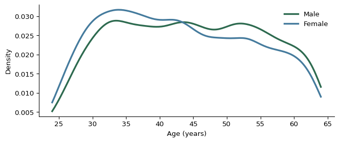
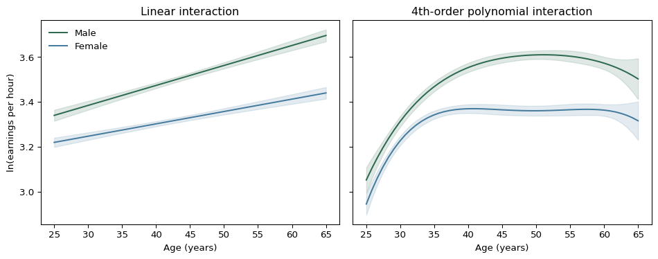

Multiple Regression, Worked Through
7002LBSAI Research Methods in Analytics — Week 6 Online Session
Multiple regression, worked through
Worked example
The gender pay gap
Understanding the gender difference in earnings
- In the USA (2014), women tend to eanr about 20% less than men
- Aim 1: Find patterns to better understand the gender gap with a particular focus on the interaction with age.
- Aim 2L Think about if there is a causal link from femal to getting paid less.
Set up
- 2014 census data
- Age between 15 to 65
- Self-employed excluded as earning are difficult to measure
- Include those who reported 20 hours or more as their usual weekly time worked
- Employees with a graduate degree
- Use log hourly earnings (lw) as the dependent variable
- Use gender and add age as an explanatory variable
Setting up the question
The simple model of the relation between earnings and gender is:
\[\ln w^E = \alpha + \beta\, female\]
Let’s include age as well:
\[\ln w^E = \beta_0 + \beta_1 female + \beta_2 age \] We can also calculate the correlation between female and age: \[ age^E = \gamma + \delta female\]
Adding age as a confounder
| Variable | (1) ln wage | (2) ln wage | (3) age |
|---|---|---|---|
| female | -0.195*** | -0.185*** | -1.484*** |
| age | 0.007*** | ||
| Constant | 3.514*** | 3.198*** | 44.630*** |
| Observations | 18,241 | 18,241 | 18,241 |
| R² | 0.028 | 0.046 | 0.005 |
Column (3) is the \(age\)-on-\(female\) regression — women in this sample are, on average, younger than men.
Source: Békés & Kézdi (2021), Ch. 10
Checking the OVB formula
\[\beta-\beta_1=\delta\beta_2\] which can be easily calculated
- \(\beta-\beta_1 = -0.195-(-0.185) = -0.0105\)
- \(\delta\beta_2 = -1.484\times0.007 \approx -0.0105\)
Age is a confounder here — but a weak one. Women in the data are somewhat younger, and younger employees earn less regardless of gender — so a small slice (about 1 percentage point of the 20%, roughly 5% of the whole gap) is attributable to the age difference, not gender itself.
Source: Békés & Kézdi (2021), Ch. 10
Looking at in the age distribution
Let’s plot the difference in the age distribution of employees with graduate degrees.
import matplotlib.pyplot as plt
from scipy.stats import gaussian_kde
import numpy as np
fig, ax = plt.subplots(figsize=(7, 3))
colors = {0: '#2d6a4f', 1: '#457b9d'}
labels = {0: 'Male', 1: 'Female'}
age_grid = np.linspace(cps_df['age'].min(), cps_df['age'].max(), 200)
for f in [0, 1]:
ages = cps_df.loc[cps_df.female == f, 'age']
kde = gaussian_kde(ages)
ax.plot(age_grid, kde(age_grid), color=colors[f], linewidth=2.5, label=labels[f])
ax.set_xlabel('Age (years)')
ax.set_ylabel('Density')
ax.legend(frameon=False)
plt.show()The age distribution, plotted

Among graduate-degree holders, the proportion of women drops noticeably after age 45, and again after 55 — men’s age distribution stays close to uniform from 30 to 55.
Two explanations are consistent with this pattern: fewer women completed graduate degrees in earlier decades, or fewer older women are currently employed.
Source: Békés & Kézdi (2021), Ch. 10
Should we consider a non-linear relationship?
| (1) | (2) | (3) | (4) | |
|---|---|---|---|---|
| female | -0.195*** | -0.185*** | -0.183*** | -0.183*** |
| age | 0.007*** | 0.063*** | 0.572*** | |
| age² | -0.001*** | -0.017*** | ||
| age³, age⁴ | ✓*** | |||
| R² | 0.028 | 0.046 | 0.060 | 0.062 |
The female coefficient barely moves at all — -0.195 → -0.185 → -0.183 → -0.183 — while R² keeps climbing with every extra polynomial term. But: more variables always raise R², but that’s not the same as changing the story. Here, no matter how flexibly age is modelled, the gender gap doesn’t budge.
Source: Békés & Kézdi (2021), Ch. 10
Does the gap even have the same slope for both?
| Women only | Men only | Pooled, interacted | |
|---|---|---|---|
| female | -0.036 | ||
| age | 0.006*** | 0.009*** | 0.009*** |
| female × age | -0.003*** |
The female coefficient in the pooled model is close to zero (-0.036, not even the whole 20% gap). Does this mean the gender gap has disappeared? What does the interaction term tell you that the dummy alone doesn’t?
Source: Békés & Kézdi (2021), Ch. 10
Interactions and non-linearities together
Let’s consider two models
\[ \ln w^E = \beta_0 + \beta_1 age + \beta_2 female + \beta_3 female \times age \]
and adding age as non-linear
\[ \ln w^E = \beta_0 + \beta_1 age + \beta_2 age^2 + \beta_3 age^3 + \beta_4 age^4 \\ + \beta_5 female + \beta_6 female \times age + \beta_7 female \times age ^2 \\ + \beta_8 female \times age^3 + \beta_9 female \times age^4 \]
Interactions and non-linearities together
Running the fully flexible version — 4th-order polynomial in age, interacted with gender — reveals the real pattern:
- The gap is around 10–8% between ages 25–30
- Rises to 17% by 40, and 22% by 50
- Tapers slightly after 60 (19%)
A single “female” coefficient could never have told this story. The gap isn’t a fixed number — it grows through most of a career and only the full interacted, non-linear model shows that shape.
Source: Békés & Kézdi (2021), Ch. 10
Predicting the gap by age
import matplotlib.pyplot as plt
import numpy as np
age_grid = np.linspace(25, 65, 50)
def predict_band(model, ages, female):
X = pd.DataFrame({'age': ages, 'female': female})
return model.get_prediction(X).summary_frame(alpha=0.05)
fig, axes = plt.subplots(1, 2, figsize=(10, 4), sharey=True)
panels = [(axes[0], inter, 'Linear interaction'),
(axes[1], full, '4th-order polynomial interaction')]
for ax, model, title in panels:
for female, color, label in [(0, '#2d6a4f', 'Male'), (1, '#457b9d', 'Female')]:
band = predict_band(model, age_grid, female)
ax.plot(age_grid, band['mean'], color=color, label=label)
ax.fill_between(age_grid, band['mean_ci_lower'], band['mean_ci_upper'], color=color, alpha=0.15)
ax.set_xlabel('Age (years)')
ax.set_title(title)
axes[0].set_ylabel('ln(earnings per hour)')
axes[0].legend(frameon=False)
plt.show()The gap by age, plotted

Both panels show predicted ln(earnings) by age and gender, with 95% confidence bands. The linear-interaction panel forces the gap to widen at a constant rate; the polynomial panel lets it curve — women’s predicted earnings flatten and dip after around 45, exactly where the age-distribution wrinkle showed fewer women in the data to estimate from precisely.
Source: Békés & Kézdi (2021), Ch. 10
What we still can’t say
- Multiple regression got us closer to a fair comparison — same age, same education
- It cannot rule out that broader gender inequality (career interruptions, occupational sorting, negotiation norms) drives part of what’s left
- We can’t prove how much of the remaining gap is labour-market discrimination specifically — there’s too much unmeasured heterogeneity
- And we haven’t ruled out selection or bad conditioning variables either
This is the honest ceiling of conditioning on observables. Getting further needs a different kind of design — which is where the module goes from Week 9 onward.
Source: Békés & Kézdi (2021), Ch. 10
A practical detour
Presenting a regression table
What actually belongs in a table
- In a presentation: suppress coefficients nobody’s there to discuss — keep the variables that matter for the story
- In a paper: show more, but mainly as a sanity check — do the control-variable coefficients make sense?
- Always check N — if it’s supposed to be the same sample across columns, the observation count should match exactly
- R² is usually enough. You don’t need every fit statistic software offers by default
Source: Békés & Kézdi (2021), Ch. 10
A word on curve-fitting

XKCD #2048, “Curve Fitting” — Randall Munroe, CC BY-NC 2.5 — click to view full size
Worked example
Closing the hotels thread: finding a good deal
Back to Vienna, with everything we now have
Since Week 5’s opening motivation — a good hotel deal, close to the centre, not overpriced — we’ve only ever used one x at a time. The full model:
\[\ln(price)^E = f(\text{distance spline}) + f(\text{rating spline}) + \beta_{3.5\star} + \beta_{4\star}\]
- Distance: piecewise linear spline, knots at 1 and 4 miles
- Rating: piecewise linear spline, knot at 3.5
- Stars: dummies for 3.5★ and 4★ (reference: 3★)
- R² = 0.56 — far better than any single-x version from Week 5
Source: Békés & Kézdi (2021), Ch. 10, hotels-vienna dataset
Finding the deals: most negative residuals
A negative residual means the hotel costs less than the model expects, given its distance, rating, and stars — genuinely underpriced relative to comparable hotels:
| Hotel | Price | Residual (ln price) | Distance | Stars | Rating |
|---|---|---|---|---|---|
| 21912 | $60 | −0.565 | 1.1 mi | 4★ | 4.1 |
| 21975 | $115 | −0.405 | 0.1 mi | 4★ | 4.3 |
| 22344 | $50 | −0.385 | 3.9 mi | 3★ | 3.9 |
| 22080 | $54 | −0.338 | 1.1 mi | 3★ | 3.2 |
| 22184 | $75 | −0.335 | 0.7 mi | 3★ | 4.1 |
This is the payoff of everything since Week 5: not a single fitted line, but a benchmark good enough to say which specific hotels are the outliers worth booking — and why.
Source: Békés & Kézdi (2021), Ch. 10
Coming up
Week 7 is reading week — no workshop, no online session.
Week 8: GLMs
Logistic and Poisson regression, marginal effects · real named datasets, at last